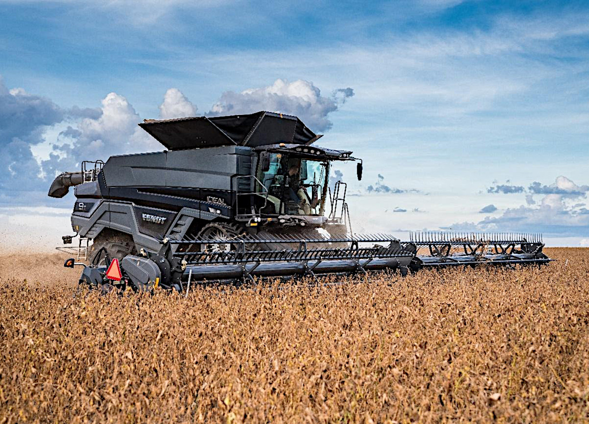
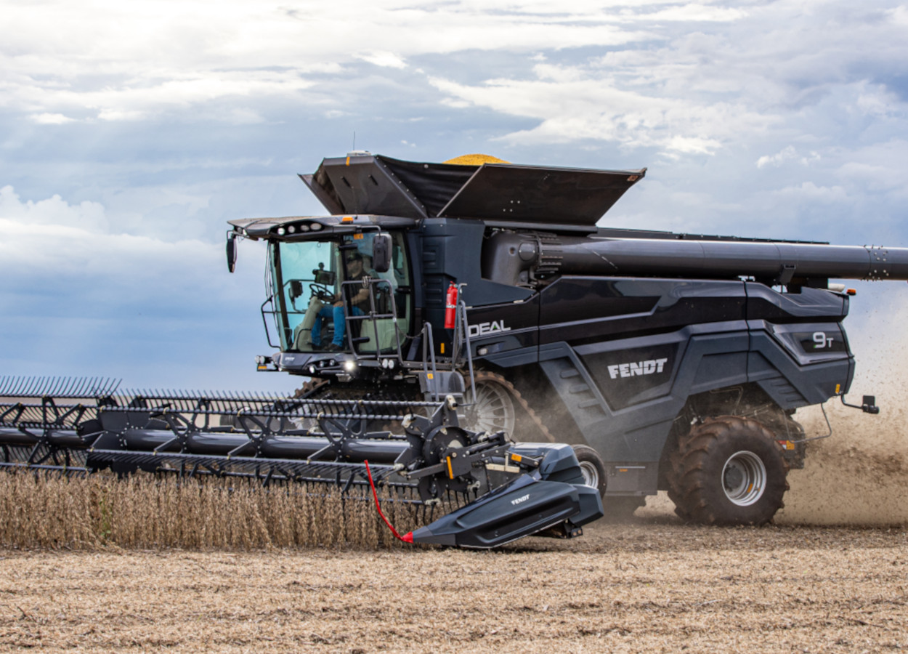

Sobre a tecnologia no campo
A tecnologia tem revolucionado a maneira como o campo e a cidade se conectam. No meio rural, inovações como sensores de solo, drones, irrigação inteligente e monitoramento remoto tornam a produção mais eficiente, sustentável e de alta qualidade. Essas soluções não só ajudam o produtor a cuidar melhor da terra, mas também garantem alimentos de qualidade que chegam até a cidade. A transformação digital no campo fortalece a economia, gera empregos e aproxima o campo da vida urbana, criando uma conexão que beneficia toda a sociedade.
Notícias Recentes
Fendt impulsiona produtividade no campo com tecnologia de ponta e inovação sustentável
Com sistemas automatizados e inteligência embarcada, as colheitadeiras Fendt Ideal garantem maior eficiência e sustentabilidade 12.06.2025 | 14:34 (UTC -3) A evolução das máquinas agrícolas se destaca como um dos principais pilares para o aumento da eficiência e da sustentabilidade na agricultura brasileira. A integração de sistemas automatizados, sensores avançados e conectividade digital em equipamentos de última geração tem revolucionado a rotina dos produtores, permitindo decisões mais precisas e operações otimizadas em todas as etapas da produção. A linha de colhedoras Fendt Ideal é um exemplo desse avanço tecnológico. Projetadas para oferecer alta performance e resultados consistentes, as máquinas contam com sistemas inteligentes que monitoram o desempenho em tempo real, otimizando o uso de recursos e garantindo eficiência durante a colheita. Essa sofisticação é fundamental para atender à crescente demanda por alimentos e fortalecer práticas agrícolas mais sustentáveis. Segundo Fernando Petroli, coordenador de marketing de produto da Fendt, "a tecnologia no campo não é mais uma opção, é uma necessidade. Máquinas agrícolas avançadas, como as colheitadeiras Fendt Ideal, são fundamentais para garantir que o produtor rural consiga não apenas aumentar sua produtividade, mas também melhorar a sustentabilidade das operações". A Fendt desenvolveu a linha Ideal com base nas necessidades reais dos agricultores brasileiros, oferecendo versões que atendem desde a colheita de grãos até a otimização da qualidade da palha. Entre os diferenciais, destaca-se o tanque de 17.100 litros — o maior do mercado — e a velocidade de descarga de 210 l/s, que proporcionam maior agilidade e produtividade no campo.
Transformação na operação agrícola
Outro destaque é a eficiência energética e o sistema de separação helicoidal, que garante alta qualidade dos grãos sem comprometer a palha. De acordo com Petroli, as tecnologias embarcadas proporcionam uma verdadeira transformação na gestão das operações agrícolas, maximizando o rendimento e reduzindo desperdícios de forma sustentável. A recém-lançada Fendt Ideal 25, apresentada na Agrishow, traz inovações como o sistema Dual Helix Processor — com os maiores rotores do mercado e área de trilha 45% superior — e um sistema de limpeza 25% maior, com compensação de até 15% de declividade, ideal para terrenos irregulares. Essas características resultam em uma colheita mais eficiente, com menor consumo de combustível e aumento de produtividade acima de 10%. Um dos responsáveis por esse resultado é o sistema HarvestPlus, que otimiza a experiência do operador. Seu sistema de automação garante operação em máxima eficiência, reduzindo perdas, melhorando a qualidade do material colhido e minimizando o uso de recursos. Outros diferenciais da colheitadeira da Fendt são os recursos como AutoTurn, que facilita as manobras e reduz a necessidade de intervenção manual, e o sistema Teach-in, que executa funções pré-programadas, proporcionando mais conforto ao operador e reduzindo riscos de erro. Pensada para operar por mais tempo com menos paradas, a Fendt Ideal 25 conta com motores ajustados para operar a 1.900 rpm, sistema de resfriamento AirSense — que mantém o desempenho mesmo em condições adversas — e ejetor de pó exclusivo, melhorando a visibilidade e a segurança durante a colheita. A ponteira ajustável do tubo de descarga e o novo acionamento das esteiras da plataforma Draper também contribuem para maior durabilidade e eficiência operacional.
Monitoramento do solo
Acompanhe em tempo real as condições do solo através de sensores inteligentes. Dados precisos de temperatura, umidade e pH ajudam a otimizar o cultivo e garantir uma produção mais eficiente e sustentável.
Temperatura
32°C
Umidade do solo
67%
pH do Solo
7.2
Conheça nossas soluções para o seu cultivo!
Sistema para gestão agrícola, sensores de solo, automação da sua irrigação. Nós temos a solução para você!